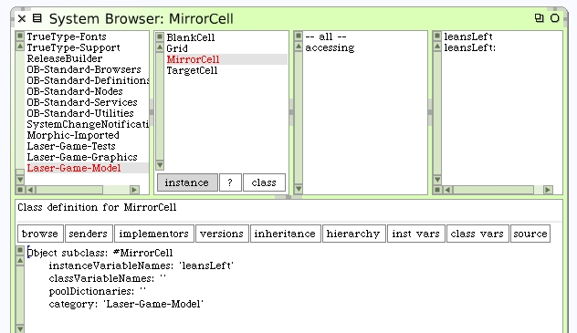
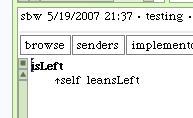

Mirror Cell
This cell is different from the Blank Cell because it has a mirror and the mirror can be oriented. The output direction of the entering laser beam is also different because of the mirror. We can begin by adding the instance variable "leansLeft" to the class. Create the accessors too.
Add some initialization code. Let the default condition be that the mirror leans left unless otherwise specified.
Add testing methods for #isLeft and #isRight. These methods should be defined with the protocol "testing".
